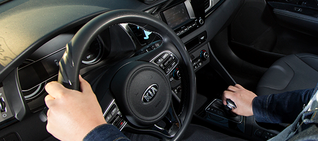
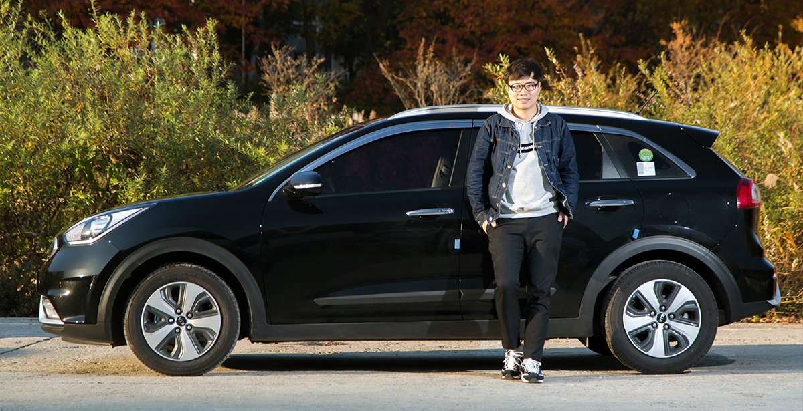
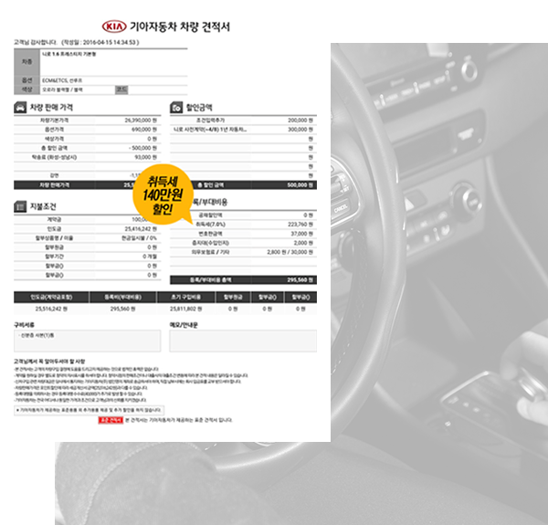
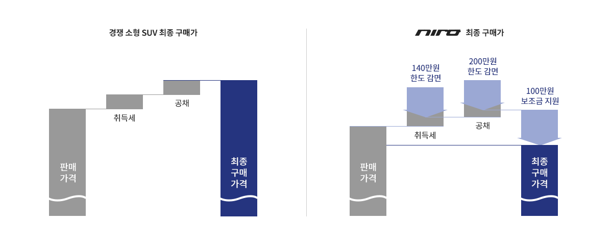
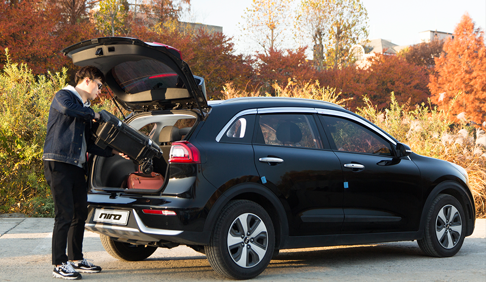
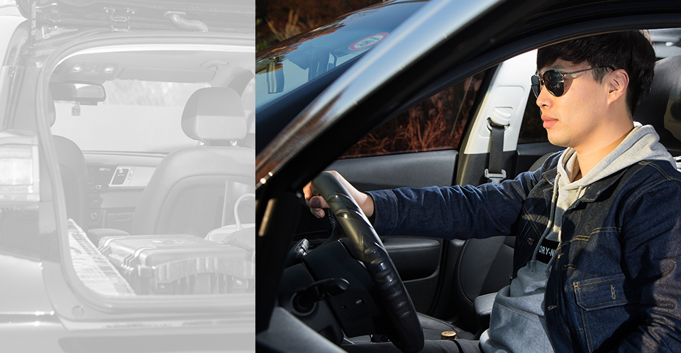
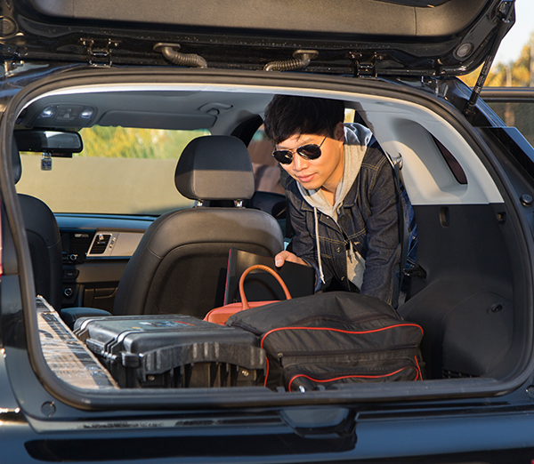

Q. 자기소개 부탁드립니다.
이전에는 카니발 오너였고,
이제는니로 오너가 된
김대진입니다.
제가 이전에 타던 차량은 카니발 11인승 이었습니다. 친척이나 형제들이 가까운 곳에 살았기에 휴가철이나 주말에 한 차를 타고 다 같이 여행을 가고 싶었거든요.
하지만 실제로 11인승을 타고 다니다 보니 혼자 타는 경우가 더 많고 직업상 외근이 많아서 운전하고 다니기에 버거울 때가 종종 있었습니다. 그래서 차를 바꾸기로 결심하던 차에,
국내 최초로 소형 SUV 하이브리드 차량이 생산된다는 소식을 듣게 됐습니다. 바로 기아자동차 니로입니다. 이전에 타던 카니발이 있는 상황이었기에 중고로 판매하고 난 다음 신차를 구매해야 했죠.

어느 정도 비용이 필요한지 조사하던 중
하이브리드카는 정부에서 많은 지원을 받으며
친환경차 혜택이 있다는 사실을 알게 됐습니다.

Q. 니로의 가장 놀라운 점은 무엇인가요?
인수비용까지 따졌을 때,
받을 수 있는 할인혜택이
정말 어마어마해요!
제가 받은 견적서에도 보이지만 친환경차 취득세 감면 140만원 공채매입 최대 200만원 그리고 자동차 구매 보조금 지원 시스템에서 신청할 수 있는 구매보조금 100만원 가까운 지원까지!!!
니로의 실구매가가 다른 소형 SUV보다 저렴하다는 것을 조사과정에서 알게 되긴 했었죠.
그러나 실제로 겪어보니 정말 저렴하다는 것을 다시 한번 깨닫게 되는 순간이었답니다. 또한 차량 구입시 필요한 취득세, 등록세도 20만원대였습니다.
차를 인수받는데 들어간 비용을 계산해 보니 잠깐 고민했던 티볼리나 그 외 동급 SUV보다 월등히 저렴하더군요.



아낀 주유비로 새로 든 적금,
생각할수록 뿌듯해요.
처음 니로를 운전했을 때, 디젤엔진에서 경험할 수 있는 소음과 진동이 느껴지지 않았습니다. 니로는 제게 정말 신세계였죠. 무엇보다 평균연비가 8km/L였던 예전 차량과 비교했을 때,
니로는 평균연비가 22km/L 이하로 떨어지지 않더군요. 연비가 너무 좋다 보니 예상했던 주유비가 반으로 줄어들었습니다. 주유비가 줄어드니 저보다 제 아내가 더 좋아하더라구요.
아내는 주유비가 절반이나 절약되니 그 돈으로 딸을 위해 적금을 들자고 하더군요. 니로로 바꾼 덕분에 딸을 위해 새로운 적금을 들어 은근 뿌듯하답니다! 새 차를 샀다는 경제적 부담감은 사라졌죠~ 이 뿐만이 아닙니다!

연비가 좋으니 드라이브도 외곽으로 자주가게 되고 절약된 차량 유지비로 외식도 자주 하게 되었답니다. 요즘 니로 덕분에 가족들에게 가장 역할을 톡톡히 하고 있네요.
지난 주말 저녁 먹으러 가는 길에 가족과 다 함께 무지개도 봤답니다! 니로의 또 다른 장점은 넓은 트렁크입니다.
중국 유학생활을 오래 해서 종종 중국 친구들이 놀러 오면 28인치 캐리어를 가져오는데 니로가 워낙 공간성이 좋다 보니 캐리어 2~3개는 기본으로 실리고, 중국 친구들까지 모두 태울 수 있어서 정말 짱입니다.
부담 없는 니로의 연비 덕분에 가족들과 올 여름엔 동해로 서해로 장거리 여행을 많이 했습니다.
다섯 식구가 한 차에 모두 타고 접이식 테이블에 텐트 2개, 튜브에 여벌 옷, 생필품에 먹거리까지 모두 싣고도 공간이 남을 정도더군요. 많은 짐을 싣고 5명이 차에 타고 이동했지만 출력 면에서도 전혀 부족함이 없었습니다.
Q. 실제 타면서 알게된 니로의 매력은 무엇인가요?
겉보기로는 알 수 없는
충분한 적재공간과
쾌적한 뒷좌석입니다.
저의 직업은 데이터 복구 엔지니어입니다. 엔지니어의 특성상 일을 할 때 짐이 많은 편인데 뒷좌석을 접은 후 물건을 적재하니 꽤 많은 짐을 싣고 다닐 수 있습니다.
이전 카니발의 실내공간이 커서 좋았으나 외근을 다닐 때 주차공간이 부족하다 보니 현장에서 먼 곳에 주차하고 짐을 들고 간 경우들이 종종 있었습니다.
그런데 니로로 바꾸고 나서는 짐도 충분히 적재할 수 있지만 주차공간 때문에 고생한 적이 거의 없었던 것 같습니다. 가끔 친구들이 차를 보며 외형이 생각보다 작다고 이야기 할 때가 많습니다.
하지만 실제로 앉아 본 뒤 넓은 뒷좌석공간에, 그리고 충분한 트렁크공간에 놀라는 친구들의 모습을 보면 속으로 뿌듯한 마음이 든답니다.

또 추천하고 싶은 니로의 장점은 온열시트와 통풍시트 옵션입니다. 니로를 구매하실 때 이 옵션은 꼭 넣기를 추천해 드립니다.
뒷좌석까지 여름에는 시원하고~ 겨울에는 따뜻하게~ 온 가족 모두 쾌적하고 기분 좋게 차를 탈 수 있답니다.
만약 주변에서 차를 바꾸려 하거나 소형 SUV 구입을 고려하고 계신 분이 있다면, 뛰어난 연비에 넓은 적재공간을 자랑하는 니로를 구입하라고 권하고 싶습니다.
* 본 컨텐츠는 김대진 님께서 2016년 4월 니로를 구입하고, 직접 운행한 경험을 토대로 작성한 시승기를 발췌 한 것이며, 컨텐츠 사용에 대한 사용료를 지불하였음을 명시합니다.